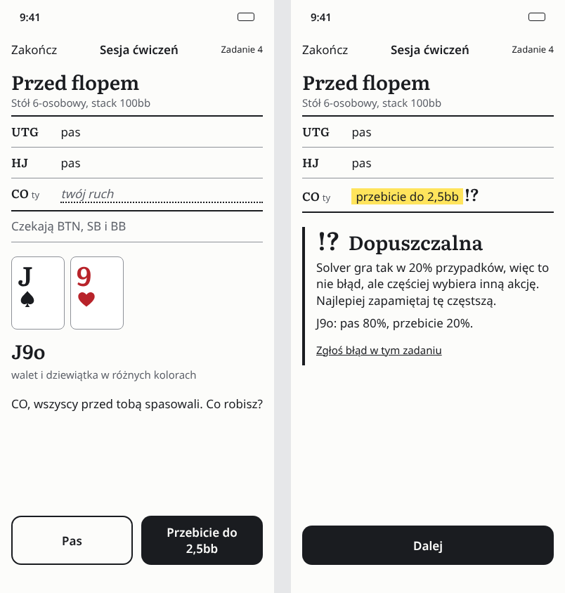
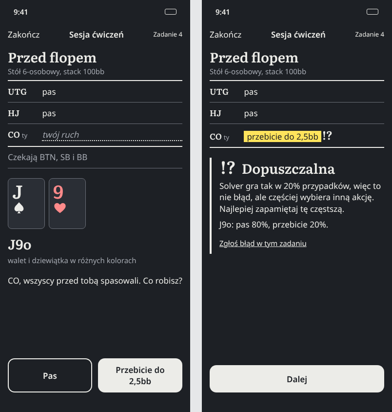
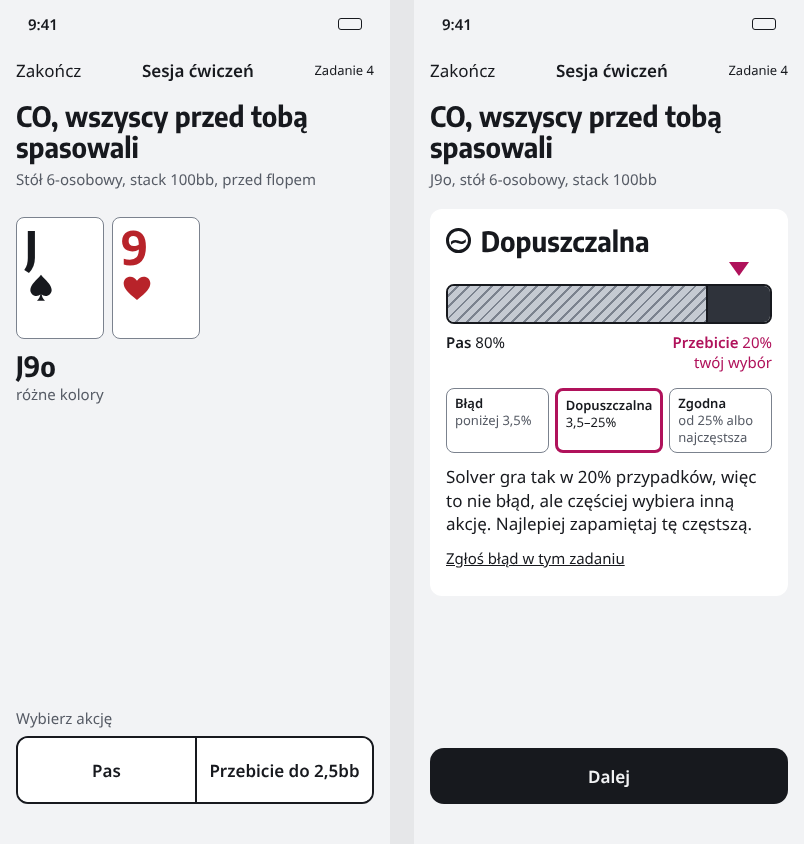
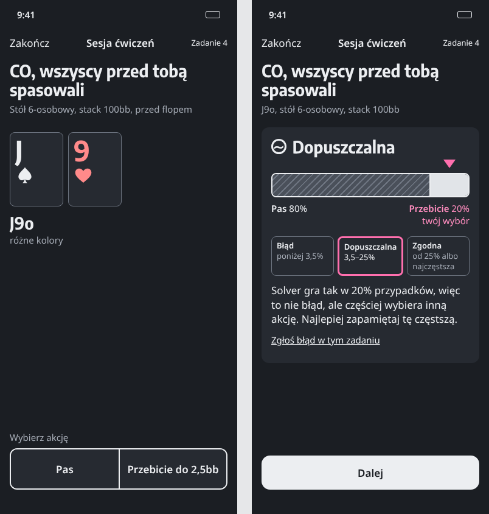
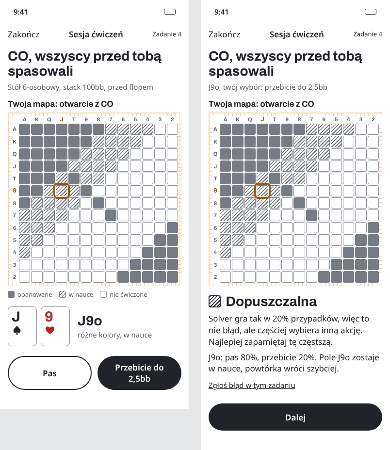
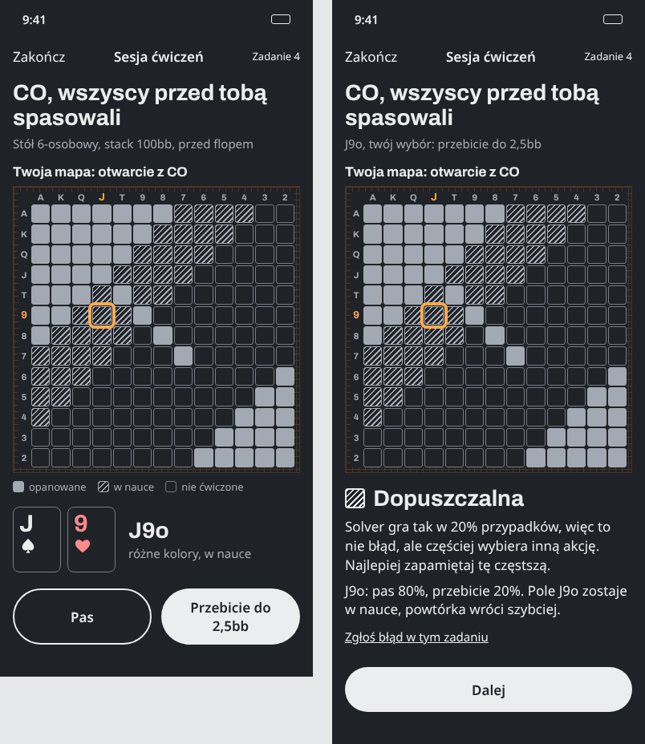

A. Zapis z adnotacją
Każda decyzja to wiersz zapisu rozdania, a ocena to znak przy twoim ruchu, jak w zapisie partii szachowej, zawsze ze słowem obok.




Najmocniejszy argument: działa przy każdym typie zadania (zakresy, liczby, scenariusz od preflopu do rivera), bo znak i słowo nie potrzebują częstotliwości; zapis ulica po ulicy to gotowy ekran scenariusza (F-12), a stopień nigdy nie jest niesiony samym kolorem.
Słabość: nie pokazuje obrazem, skąd wziął się stopień (mówi to tekst); znaki szachowe trzeba raz objaśnić.
B. Pasek strategii mieszanej
Przyciski akcji tworzą jeden pasek; po decyzji pasek rozkłada się na częstotliwości rozwiązania, a znacznik pokazuje twój wybór i przedział stopnia.




Najmocniejszy argument: jedyny kierunek, który pokazuje obrazem dokładnie te dane, z których liczy się ocena; ręka mieszana przestaje wyglądać na błąd. W skanie 13 aplikacji nikt tego nie robi.
Słabość: zadania liczbowe (outy, szanse, pot odds) nie mają częstotliwości, więc tam element znika; ikona przy 29 pt czyta się trochę jak bateria.
C. Mapa 169 jako mapa wiedzy
Siatka 13×13 klas rąk nie pokazuje strategii, tylko twoją wiedzę w tej pozycji; bieżąca ręka jest obwiedziona, a ocena zmienia stan jej pola.




Najmocniejszy argument: każda decyzja w sesji od razu dokłada się do widocznego obrazu postępu (powtórki, opanowanie), więc sesja w dojeździe ma sens poza jednym zadaniem.
Słabość: działa tylko przy decyzjach przed flopem; siatka 13×13 to klisza kategorii (6 z 13 aplikacji) i zajmuje pół ekranu w kontekście jednej ręki.